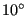
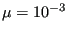
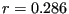
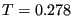
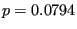
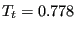
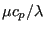
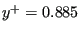
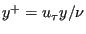
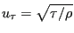

Next: Laminar viscous compressible airfoil Up: Simple example problems Previous: Stationary laminar inviscid compressible Contents
This benchmark example is described in [16]. The input deck for the
CalculiX computation is called carter_10deg_mach3.inp and can be found in the
fluid test example suite. The flow is entering at Mach 3 parallel to a plate
of length 16.8 after which a corner of
       and
and
 leads to a specific gas constant
leads to a specific gas constant
A very fine mesh with about 425,000 nodes was generated, gradually finer towards
the wall (    is the shear stress parallel to the wall ). The Mach number is shown in Figure 32. The shock wave
emanating from the front of the plate and the separation and reattachment
compression fan at the kink in the plate are cleary visible. One also observes
the thickening of the boundary layer near the kink leading to a recirculation
zone. Figure 33 shows the velocity component parallel to the inlet
plate orientation across a line perpendicular to a plate at unit length from
the entrance. One notices that the boundary layer in the CalculiX calculation
is smaller than in the Carter solution. This is caused by the
temperature-independent viscosity. Applying the Sutherland viscosity law leads
to the same boundary layer thickness as in the reference. In CalculiX, no additional shock smoothing was necessary. Figure
34 plots the static pressure at the wall relative to the inlet
pressure versus a normalized plate length. The reference length for the
normalization was the length of the plate between inlet and kink (16.8 unit
lengths). So the normalized length of 1 corresponds to the kink. There is a
good agreement between the CalculiX and the Carter results, apart from the
outlet zone, where the outlet boundary conditions influence the CalculiX results.
is the shear stress parallel to the wall ). The Mach number is shown in Figure 32. The shock wave
emanating from the front of the plate and the separation and reattachment
compression fan at the kink in the plate are cleary visible. One also observes
the thickening of the boundary layer near the kink leading to a recirculation
zone. Figure 33 shows the velocity component parallel to the inlet
plate orientation across a line perpendicular to a plate at unit length from
the entrance. One notices that the boundary layer in the CalculiX calculation
is smaller than in the Carter solution. This is caused by the
temperature-independent viscosity. Applying the Sutherland viscosity law leads
to the same boundary layer thickness as in the reference. In CalculiX, no additional shock smoothing was necessary. Figure
34 plots the static pressure at the wall relative to the inlet
pressure versus a normalized plate length. The reference length for the
normalization was the length of the plate between inlet and kink (16.8 unit
lengths). So the normalized length of 1 corresponds to the kink. There is a
good agreement between the CalculiX and the Carter results, apart from the
outlet zone, where the outlet boundary conditions influence the CalculiX results.